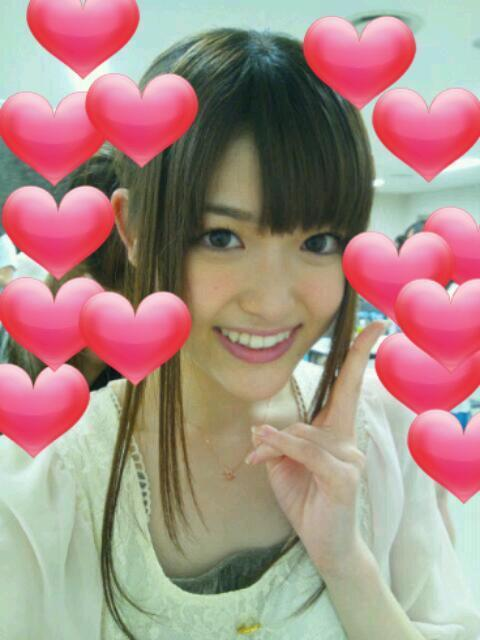

2012/0513Sunたのしいことっ(o・・o)
こんばんごっ(o・・o)
さゆりんごっ(o・・o)
まず始めに
セカンドシングルの
おいでシャンプー
ウィクリーチャートで
１位でしたっ(*≧∀≦*)
本当にありがとうございます♪
１位ってことは
日本で一番ですね！
素直に嬉しいっ(*≧∀≦*)
松村の目標のひとつが
叶いましたっ(o・・o)☆
けど、調子にのったら
あかんですね(>_<)
初心を忘れずですねっ！
乃木坂は上り坂！
ゆっくりでも坂を上れるように
これからも頑張ります♪
本当にありがとうございました！
そして
松村はいま、
月刊ヤングマガジンさんと
チャンピオンさんに
登場させていただいてます！
ヤングマガジンさんでは
表紙まで飾らせていただいて
乃木坂でグラビアジャックしております(*^^*)
さらにポスターがついてるのですが
松村が単体のもありますので
良かったら探してみてくださいませっ(o・・o)
チャンピオンさんは
運動音痴なさゆりんの
スポーティーな姿がみれます！
よろしくお願いします(*^^*)
そして今日は
幕張メッセで個別握手会でしたっ(*≧∀≦*)
握手会のまえに
調印式なる幕張宣言なるものをしました！
指原さんとは
マブダチです！笑
一緒においでシャンプーと
それでも好きだよをパフォーマンスしました！
めっちゃ緊張したけど
楽しかったですo(*⌒―⌒*)o
大分市長とたかもんも来てくれはって
スゴかったです！笑
握手会はほんまに
沢山の方に来ていただけて
松村は涙がでるほど
嬉しかったです♪
全国から来てくださって
ほんまにありがとうございます！
今日もさゆりん
皆さんから沢山の元気をもらいました!!
ほんまに楽しかった〜(*≧∀≦*)♪
来週は名古屋ですねっ！
また楽しみ〜♪
ほんなら、今日のさゆりん♪

ありがとうございました♪
みなさま大好きっ＊
さゆりんごでしたっ(o・・o)/
おやすみなさゆりんっ(o・・o)/~
2012/05/13 01:18
コメント(468)
今日はお疲れ様！！
ゆっくり休んでください。。。
握手会お疲れ様（＾∇＾）
そういえばさゆりん運動音痴だったね！
ウィークリー1位おめでとう(=´∀｀)人(´∀｀=)
指原さんのアドレス手に入れることできたん？
そういえばさゆりん運動音痴だったね！
ウィークリー1位おめでとう(=´∀｀)人(´∀｀=)
指原さんのアドレス手に入れることできたん？
握手会お疲れ様
さゆりん可愛かったよ(*^_^*)
また握手できるの楽しみにしてるね♪
さゆりん可愛かったよ(*^_^*)
また握手できるの楽しみにしてるね♪
りんごさーん
コメント9回目？
( ´艸｀)
チャンピオンみたよ
さゆりんごめちゃかわいかったよ
ヤンマガもみた
めちゃかわえー
偶然を言い訳にしての
メンバーのみのあったね
みんなかわいかった
ユニットに名前つけなきゃね
乃木坂浪漫もやっとみた
さゆりんうまいねー
「寄生されてるの」は
よくわからなかった(泣)
あしたの乃木どこみるよ
おやすみー
コメント9回目？
( ´艸｀)
チャンピオンみたよ
さゆりんごめちゃかわいかったよ
ヤンマガもみた
めちゃかわえー
偶然を言い訳にしての
メンバーのみのあったね
みんなかわいかった
ユニットに名前つけなきゃね
乃木坂浪漫もやっとみた
さゆりんうまいねー
「寄生されてるの」は
よくわからなかった(泣)
あしたの乃木どこみるよ
おやすみー
初コメ!! 握手会お疲れ様！
オリコンウィークリーチャート1位おめでとう！
チャンピオンもヤンマガもチェックしたよ☆
さゆりんご可愛い^^
これからも頑張ってo(^▽^)o
オリコンウィークリーチャート1位おめでとう！
チャンピオンもヤンマガもチェックしたよ☆
さゆりんご可愛い^^
これからも頑張ってo(^▽^)o
りんごー！
来週の全握は遊びにいくね
中田にナイショで
来週の全握は遊びにいくね
中田にナイショで
いくりんごパンチヽ(・∀・)ノ
さゆりん学校のテスト無くして涙
さゆりん学校のテスト無くして涙
おつかれー(^o^)！
トミーですよ＼(^o^)／
オリコン一位ほんとにおめでとう(〃▽〃)
今日の握手会もほんとに楽しかったよ＼(^o^)／
私だけ覚えてればいいじゃん発言には高まったわwww
さゆりん釣り子だな(￣ー+￣)フッ
つぎは関東全握になるけど忘れないでね(泣)
オリコン一位ほんとにおめでとう(〃▽〃)
今日の握手会もほんとに楽しかったよ＼(^o^)／
私だけ覚えてればいいじゃん発言には高まったわwww
さゆりん釣り子だな(￣ー+￣)フッ
つぎは関東全握になるけど忘れないでね(泣)
こんばんごーさゆりん!!
週間1位おめでとうヾ(^▽^)ノ 次は初動20万枚ねらってきましょー(>_<)
マブダチになれてよかったー、焼き肉おごってもらうんよヽ(´ー｀)ノ笑
月刊ヤンマガさゆりんポスターをコンビニまわって只今探しちゅうだよー、みつからんよーなんでなんよー(T_T) 絶対みつけるからねっ、ポラロイドも応募しちゃうぞ!!
ほならねー(^o^)
dai
週間1位おめでとうヾ(^▽^)ノ 次は初動20万枚ねらってきましょー(>_<)
マブダチになれてよかったー、焼き肉おごってもらうんよヽ(´ー｀)ノ笑
月刊ヤンマガさゆりんポスターをコンビニまわって只今探しちゅうだよー、みつからんよーなんでなんよー(T_T) 絶対みつけるからねっ、ポラロイドも応募しちゃうぞ!!
ほならねー(^o^)
dai
* ･ ･ ･ * ･ ･ ･ * ･ ･ ･ * ･ ･ ･ * ･ ･ ･ *
おつかりんご(*´∀｀*)
1位おめでとう！今CDTVでも1位でおいでシャンプー流れました☆
今日は個別券あったのに、行けなかった＞＜
さゆりんに会いたかったよー＞＜
来週・再来週と名古屋だね！
まゆメロは再来週の名古屋個別に行くよ☆
さゆりんと何お話しようーって今からいろいろ考えてます。
楽しいお話いっぱいしようね！
雑誌もたくさん出てるみたいなので、チェックするね！
早くさゆりんに会いたいよー(*´∀｀*)
まゆメロ(*´∀｀*)
* ･ ･ ･ * ･ ･ ･ * ･ ･ ･ * ･ ･ ･ * ･ ･ ･ *
おつかりんご(*´∀｀*)
1位おめでとう！今CDTVでも1位でおいでシャンプー流れました☆
今日は個別券あったのに、行けなかった＞＜
さゆりんに会いたかったよー＞＜
来週・再来週と名古屋だね！
まゆメロは再来週の名古屋個別に行くよ☆
さゆりんと何お話しようーって今からいろいろ考えてます。
楽しいお話いっぱいしようね！
雑誌もたくさん出てるみたいなので、チェックするね！
早くさゆりんに会いたいよー(*´∀｀*)
まゆメロ(*´∀｀*)
* ･ ･ ･ * ･ ･ ･ * ･ ･ ･ * ･ ･ ･ * ･ ･ ･ *
こんばんは♪
更新ありがとう(*^_^*)
ちゃんとさゆりんが出てる雑誌確認したよ！
新しい一面が見れました♪
で
今日はお疲れ様(*^_^*)初めて握手したけど実物はめっちゃ可愛いな！
完全にハマったわぁ
これからも絶対行くね(≧∇≦)
じゃおやすみ♪
更新ありがとう(*^_^*)
ちゃんとさゆりんが出てる雑誌確認したよ！
新しい一面が見れました♪
で
今日はお疲れ様(*^_^*)初めて握手したけど実物はめっちゃ可愛いな！
完全にハマったわぁ
これからも絶対行くね(≧∇≦)
じゃおやすみ♪
さゆりんご超可愛いょー♥♥
１位＼_(^◇^)_／＼(*^^*)／ おめでとっ！
これからも頑張ってね(*´∀｀*)
ずーっと応援⊂(^・^)⊃するからねっ☆彡
何事も諦めずに挑戦してね！！！！！！
１位＼_(^◇^)_／＼(*^^*)／ おめでとっ！
これからも頑張ってね(*´∀｀*)
ずーっと応援⊂(^・^)⊃するからねっ☆彡
何事も諦めずに挑戦してね！！！！！！
お疲れ様でした～！個握いきたかったなぁ～(T-T)
今日はお疲れ様です(>_<)！
楽しかったと思うけど、結構疲れてると思うんだ（ ; ; ）
ゆっくり休んでねzzz
それでは俺もおやすみなさゆりんします(o・・o)
楽しかったと思うけど、結構疲れてると思うんだ（ ; ; ）
ゆっくり休んでねzzz
それでは俺もおやすみなさゆりんします(o・・o)
今日はお疲れさまでしたm(__)m
ヤンマガもチャンピオンも見たよ(^o^)
どっちのさゆりんも可愛かった(>_<)
俺も今日さゆりんと握手出来て楽しかったよヽ(*´▽)ノ♪
来週の名古屋の全握も楽しみです(o^－^o)
早くさゆりんに会いたいよぉ(;＿q)
ヤンマガもチャンピオンも見たよ(^o^)
どっちのさゆりんも可愛かった(>_<)
俺も今日さゆりんと握手出来て楽しかったよヽ(*´▽)ノ♪
来週の名古屋の全握も楽しみです(o^－^o)
早くさゆりんに会いたいよぉ(;＿q)
こんばんご☆
今日の個別握手会おつかりんご☆
今日はねぇ大学の授業のせいでねぇ
さゆりんに会いに行けんかったよ～(>_<)
あぁ残念…
まぁまた6月2日のミニ個別握手会で喋ろうなぁ♪
今日は疲れたと思うからゆっくり休んでね♪
おやすみなさゆりん☆
あっヤンマガとチャンピオンはチェックしとくからね(^^)b
今日の個別握手会おつかりんご☆
今日はねぇ大学の授業のせいでねぇ
さゆりんに会いに行けんかったよ～(>_<)
あぁ残念…
まぁまた6月2日のミニ個別握手会で喋ろうなぁ♪
今日は疲れたと思うからゆっくり休んでね♪
おやすみなさゆりん☆
あっヤンマガとチャンピオンはチェックしとくからね(^^)b
こんばんごっ(o・・o)
さゆりんごっ(o・・o)
今日は服をほめてくれてありがとう( ´_ゝ｀)
かわいいって褒めてくれたので、すごい驚きました笑
さゆりんごビンタはやばい効いた笑
今度はさゆりんごアッパーお願いします 笑
笑
本当に楽しかったです、ありがとう
さゆりんごっ(o・・o)
今日は服をほめてくれてありがとう( ´_ゝ｀)
かわいいって褒めてくれたので、すごい驚きました笑
さゆりんごビンタはやばい効いた笑
今度はさゆりんごアッパーお願いします
本当に楽しかったです、ありがとう
さゆりーん！今日は楽しかったよ！
やっぱさゆりん可愛い(^-^)/
冷え性で手冷たくてごめんねー^^;
今日初めてだったけど最初から最後まで最高だったー♪( ´▽｀)
絶対次の個別も行くね！
でも、やっぱり疲れてると思うから
ゆっくり休んで欲しいですわ！
ずっと応援するよ！
次の会場で会いましょー( ´ ▽ ` )ﾉ
今日はありがとー！
ととろりんご
1日お疲れさま～
ヤンマガのポスターさゆりんの2枚（2冊）買って裏表で飾ってるよ！ｗ
握手会のさゆりんは相変わらず、ずーっとピョンピョンしてて
なんで一人一人みんなにずーっとこんだけ笑顔振り撒けるんだろうってくらいがんばってて楽しんでて
なんか安心するよね～
さゆりんはここから1ヶ月くらい毎週末握手会だけど
無理して身体壊さない程度に楽しんでがんばってね！
俺自身今日、他の子の握手言ってるとかカミングアウトしましたがｗ
そしてその他の子にさゆりん推しだってバレててめっちゃ焦ってたんですがｗ
まあそこは1番2番はっきりしてね
お見立て会の申し込み時の暫定推しからずっとさゆりんを1番って書き続けてるのでね、そこは
まあいろいろがんばりますｗ
今日はありがとうゆっくり休んでね
ヤンマガのポスターさゆりんの2枚（2冊）買って裏表で飾ってるよ！ｗ
握手会のさゆりんは相変わらず、ずーっとピョンピョンしてて
なんで一人一人みんなにずーっとこんだけ笑顔振り撒けるんだろうってくらいがんばってて楽しんでて
なんか安心するよね～
さゆりんはここから1ヶ月くらい毎週末握手会だけど
無理して身体壊さない程度に楽しんでがんばってね！
俺自身今日、他の子の握手言ってるとかカミングアウトしましたがｗ
そしてその他の子にさゆりん推しだってバレててめっちゃ焦ってたんですがｗ
まあそこは1番2番はっきりしてね
お見立て会の申し込み時の暫定推しからずっとさゆりんを1番って書き続けてるのでね、そこは
まあいろいろがんばりますｗ
今日はありがとうゆっくり休んでね
もうさゆりん可愛すぎた。た。
さゆりん好きな友達にさゆりんごビンタしてくれてほんとにありがとう！笑
友達はめちゃめちゃ幸せそうでした＼(^o^)／笑
さゆりんてめっちゃ一生懸命に話し聞いてくれるし、今日すごく感動したよ(*^^*)
また会いに行くね( ´・◡・｀)
それでは！
さゆりん好きな友達にさゆりんごビンタしてくれてほんとにありがとう！笑
友達はめちゃめちゃ幸せそうでした＼(^o^)／笑
さゆりんてめっちゃ一生懸命に話し聞いてくれるし、今日すごく感動したよ(*^^*)
また会いに行くね( ´・◡・｀)
それでは！
さゆりんこんばんごーヽ(^^)
１位おめでとうヾ(^▽^)ノ
さゆりんの目標が叶って良かったー！！
ヤンマガ買ったよー！！
さゆりんのポスター探しにコンビニ巡りしたんだけどないよー(>_<。)
そして今日個別握手会楽しかったー(≧∀≦)
さゆりんにさゆりんごパンチして貰って気合い入れてもらったｗｗ
来週から仕事頑張るぜー！！
来月も行くからねー！！
今日はお疲れ様でした！！
ゆっくり休んでねーおやすみなさい(＾＾)ノシ
１位おめでとうヾ(^▽^)ノ
さゆりんの目標が叶って良かったー！！
ヤンマガ買ったよー！！
さゆりんのポスター探しにコンビニ巡りしたんだけどないよー(>_<。)
そして今日個別握手会楽しかったー(≧∀≦)
さゆりんにさゆりんごパンチして貰って気合い入れてもらったｗｗ
来週から仕事頑張るぜー！！
来月も行くからねー！！
今日はお疲れ様でした！！
ゆっくり休んでねーおやすみなさい(＾＾)ノシ
ほにゃにゃちは
握手してくれて
ありがとう！！
今日も元気で
ピョンピョン跳ねてくれて
嬉しいね
おかげで
気分アゲアゲです
ありがとう
頑張ってな！
握手してくれて
ありがとう！！
今日も元気で
ピョンピョン跳ねてくれて
嬉しいね
おかげで
気分アゲアゲです
ありがとう
頑張ってな！
さゆりんお疲れ( ´ ▽ ` )ﾉ
今日の握手会参加したよ！
って知ってたりするんかな？笑
初めてさゆりんごパンチしてもらったわ\(//∇//)\
今日のさゆりんも超可愛かったよ(((o(*ﾟ▽ﾟ*)o)))
さゆりんのそれでも好きだよもよかったよ！
また見たいけど、もう2度とないんだろうな・・・
じゃあまた次は名古屋で(=´∀｀)人(´∀｀=)
今日の握手会参加したよ！
って知ってたりするんかな？笑
初めてさゆりんごパンチしてもらったわ\(//∇//)\
今日のさゆりんも超可愛かったよ(((o(*ﾟ▽ﾟ*)o)))
さゆりんのそれでも好きだよもよかったよ！
また見たいけど、もう2度とないんだろうな・・・
じゃあまた次は名古屋で(=´∀｀)人(´∀｀=)
お疲れさま。
今日行けるはずだったのに部活の試合が入って行けなかった。
結果ベスト4だよ！ほめてほめて！(ちょうしにのりました)
めっちゃ行きたかった。
ウィークリー1位おめでとう！
ヤンマガさゆりんのポスター欲しかったからコンビニはしごしたよ。さゆりんのサインのボロマイド欲しい。
さゆりん可愛すぎるよ～
さゆりんおやすみ～
じゃあね♪
今日行けるはずだったのに部活の試合が入って行けなかった。
結果ベスト4だよ！ほめてほめて！(ちょうしにのりました)
めっちゃ行きたかった。
ウィークリー1位おめでとう！
ヤンマガさゆりんのポスター欲しかったからコンビニはしごしたよ。さゆりんのサインのボロマイド欲しい。
さゆりん可愛すぎるよ～
さゆりんおやすみ～
じゃあね♪
今日のさゆりんも可愛い♪
おやすみ♪
おやすみ♪
本日さゆりんに小指の名前を考えてもらった者です。
この呼び名は一生大事にします。ありがとう！
♪( ´▽｀)
この呼び名は一生大事にします。ありがとう！
♪( ´▽｀)
今日はなぜスリッパだったのか教えてください笑
|∀ﾟ)＜まいどまいど！！
|∀ﾟ)＜さゆりんご
|∀ﾟ)＜さのぞうだす！
|∀ﾟ)＜今日はお疲れさんでした！
|∀ﾟ)＜今日話した｢天下一品｣同盟
|∀ﾟ)＜よろしく頼むZE☆☆
|∀ﾟ)＜天下一品をもっともっと広めよー
|∀ﾟ)＜また次の握手会で
|∀ﾟ)＜語り合おうず
|∀ﾟ)＜あとね
|∀ﾟ)＜今回からコスプレなんかがチラホラと…
|∀ﾟ)＜これはさゆりんごも
|∀ﾟ)＜コスプレするしか！！！！！！
|∀ﾟ)＜期待しているZE☆
|∀ﾟ)＜ほなまたー！
|∀ﾟ)ﾉｼ
|∀ﾟ)＜さゆりんご
|∀ﾟ)＜さのぞうだす！
|∀ﾟ)＜今日はお疲れさんでした！
|∀ﾟ)＜今日話した｢天下一品｣同盟
|∀ﾟ)＜よろしく頼むZE☆☆
|∀ﾟ)＜天下一品をもっともっと広めよー
|∀ﾟ)＜また次の握手会で
|∀ﾟ)＜語り合おうず
|∀ﾟ)＜あとね
|∀ﾟ)＜今回からコスプレなんかがチラホラと…
|∀ﾟ)＜これはさゆりんごも
|∀ﾟ)＜コスプレするしか！！！！！！
|∀ﾟ)＜期待しているZE☆
|∀ﾟ)＜ほなまたー！
|∀ﾟ)ﾉｼ
お疲れやまです!!
オリコンウィークリーチャート1位おめでとう(^O^)/
月刊ヤングマガジンとチャンピオン見たよ!!
さゆりんめっちゃ可愛いんだが〃ω〃
あっ!!
ヤングマガジンさゆりんのポスター付いてるやつ買ったよ・ω・〃
個別お疲れー
楽しかった？？？
って楽しくない訳ないか!!笑
名古屋の握手会行くからね(*・∀・)ゝ
それでは…((ヾ。・ω・)／
さゆりん！こんばんは！
今日は握手会お疲れ様！
誕生日祝ってくれてありがとう♪
雑誌どっちも買ったで！
スポーティーなさゆりんも良いよ(笑)
では、体に気をつけて！
お仕事頑張ってね♪
今日は握手会お疲れ様！
誕生日祝ってくれてありがとう♪
雑誌どっちも買ったで！
スポーティーなさゆりんも良いよ(笑)
では、体に気をつけて！
お仕事頑張ってね♪
さゆりんご〜今日はお疲れ様(^_−)−☆
そしてありがとう♪
今日は1番最後の部に1回しか行けなかったけど、さゆりん覚えててくれてめっちゃ嬉しかったよ\(//∇//)\
俺も顔見れて良かった(((o(*ﾟ▽ﾟ*)o)))
本当はもっとがっつり行きたかったんだけど…、ナースマンは忙しいから！笑
また次も行くから、またその時まで！
コメント久しぶりでごめんちゃい(>_<)
そしてありがとう♪
今日は1番最後の部に1回しか行けなかったけど、さゆりん覚えててくれてめっちゃ嬉しかったよ\(//∇//)\
俺も顔見れて良かった(((o(*ﾟ▽ﾟ*)o)))
本当はもっとがっつり行きたかったんだけど…、ナースマンは忙しいから！笑
また次も行くから、またその時まで！
コメント久しぶりでごめんちゃい(>_<)
さゆりんおつかれさま！写真めっちゃかわいいです。
握手会盛り上がったようですね。予定があえば来週の名古屋に行きたいです。大阪より名古屋のほうが近いけど大阪はポスターが当たった演技のいい場所だからなぁ。
そうそう額縁届いて今日額装しました。金枠フレームでたいへん豪華になりました。33人分のサイン入りポスター大切にします。
月刊ヤングジャンプ買いました。乃木坂でグラビアジャックしてましたね。残念ながらポスターはまいやんでした。最後の一冊だったので選択の余地無しでした。さゆりんの探して本屋やコンビにをはしごします。
ではまた握手会でジャンピングしながら握手することを夢見つつおやすみなさい。
さゆりんお体大事にご自愛下さい。
握手会盛り上がったようですね。予定があえば来週の名古屋に行きたいです。大阪より名古屋のほうが近いけど大阪はポスターが当たった演技のいい場所だからなぁ。
そうそう額縁届いて今日額装しました。金枠フレームでたいへん豪華になりました。33人分のサイン入りポスター大切にします。
月刊ヤングジャンプ買いました。乃木坂でグラビアジャックしてましたね。残念ながらポスターはまいやんでした。最後の一冊だったので選択の余地無しでした。さゆりんの探して本屋やコンビにをはしごします。
ではまた握手会でジャンピングしながら握手することを夢見つつおやすみなさい。
さゆりんお体大事にご自愛下さい。
こんばんは。
初めまして、元気です。
つい最近までAKB、SKE
をめっちゃ推してたけど、
ノギドコ見て乃木坂46にハマったよ。笑
いつか近いうちに握手回に参加しまーす！
遠征とかもしてるからいろんなところで
会えたらいいなぁーって思ってるよ(*^^)v
8月から2年間ニュージーランドに留学しちゃうけど
それまで一生懸命応援するねー！
初めまして、元気です。
つい最近までAKB、SKE
をめっちゃ推してたけど、
ノギドコ見て乃木坂46にハマったよ。笑
いつか近いうちに握手回に参加しまーす！
遠征とかもしてるからいろんなところで
会えたらいいなぁーって思ってるよ(*^^)v
8月から2年間ニュージーランドに留学しちゃうけど
それまで一生懸命応援するねー！
６月の個別握手会参加しまーす！！
よろしくね！！
よろしくね！！
さゆりんご
個別握手会お疲れ様でした( ´ ▽ ` )ﾉ
生駒レーンから見てましたが底なしの疲れ知らずで来てくれたファンみんなへの対応頭が下がります！
また遊びに行くのでゆっくり休んでね(( _ _ ))..zzzZZ
個別握手会お疲れ様でした( ´ ▽ ` )ﾉ
生駒レーンから見てましたが底なしの疲れ知らずで来てくれたファンみんなへの対応頭が下がります！
また遊びに行くのでゆっくり休んでね(( _ _ ))..zzzZZ
パンチ三回もありがとうｗｗ
痛かったです笑
痛かったです笑
おつかれ～！
さゆりんごっ(o・・o)
まっつんからまっつんへ
今日はたびたび登場しまして、いつものように高まってましたよ！
いや、ライブもあったからいつもより高まってたかな？
やっぱり、りんごが好きやなぁ…
来週行けたら行くから楽しみにしてるね！
ほなら、おやすみ～！
さゆりんごっ(o・・o)
まっつんからまっつんへ
今日はたびたび登場しまして、いつものように高まってましたよ！
いや、ライブもあったからいつもより高まってたかな？
やっぱり、りんごが好きやなぁ…
来週行けたら行くから楽しみにしてるね！
ほなら、おやすみ～！
さゆりん こんばんはφ(≧∀≦*)
こんばんはφ(≧∀≦*)
2ndシングル「おいでシャンプー」ウィクリーチャート１位
おめでとう♪(*⌒ｰ⌒)o∠★:ﾟ*PAN!
そして昨日は、個別握手会@幕張に参加させてもらいました。
第２部でさゆりんと久しぶりに握手しました。
３月の東京個別のとき以来だったので、
お会いして話をすることができて楽しかったです。(≧∇≦)
また今度、是非行きたいと思います。
そのときは、よろしくね。
昨日は本当にありがとうございました！
最後にさゆりんご ぱーんちo( o・ω・o)=○))～～☆
してもらったんで元気十分です！
調印式からはじまった１日お疲れ様でした。
おやすみなさい。
 さ(ゆo・ω・oり)んGO！
さ(ゆo・ω・oり)んGO！
2ndシングル「おいでシャンプー」ウィクリーチャート１位
おめでとう♪(*⌒ｰ⌒)o∠★:ﾟ*PAN!
そして昨日は、個別握手会@幕張に参加させてもらいました。
第２部でさゆりん
３月の東京個別のとき以来だったので、
お会いして話をすることができて楽しかったです。(≧∇≦)
また今度、是非行きたいと思います。
そのときは、よろしくね。
昨日は本当にありがとうございました！
最後にさゆりんご ぱーんちo( o・ω・o)=○))～～☆
してもらったんで元気十分です！
調印式からはじまった１日お疲れ様でした。
おやすみなさい。
さゆりん、こんばんご(o・・o)/
まずはウィクリーチャート１位おめでとうございますo(^▽^)o
乃木坂のみんなが頑張った証拠だね(*^^*)♪
調印式はサプライズの連続で楽しかったです( ^^)Y☆Y(^^ )
そして握手会おつかれさまです＼(^o^)／
リアルさゆりんごビームを堪能できて楽しかったですヽ(´▽`)ノ
バレーの話も出来て親近感が湧きました(*´ー｀*)
体調には気を付けて、無理しないでくださいねヽ(´o｀；
それでは( ^-^)_旦~
まずはウィクリーチャート１位おめでとうございますo(^▽^)o
乃木坂のみんなが頑張った証拠だね(*^^*)♪
調印式はサプライズの連続で楽しかったです( ^^)Y☆Y(^^ )
そして握手会おつかれさまです＼(^o^)／
リアルさゆりんごビームを堪能できて楽しかったですヽ(´▽`)ノ
バレーの話も出来て親近感が湧きました(*´ー｀*)
体調には気を付けて、無理しないでくださいねヽ(´o｀；
それでは( ^-^)_旦~
おいでシャンプーオリコン１位おめでとう！
さゆりいいいいいいいいいいいいいいいいいいいいいいいん
オリコン１位おめでとうやで！
指原さんとマブダチなら、
ぼくとさゅりはずっ友だょ…！
それじゃあ、僕はしばらくヤングマガジンを探す旅に出ます。
帰りはいつになるかわからないけど、きっと戻ってくるからね…！
ぜったいぜったい、まっててよね！
約束だょ！
ドロン
オリコン１位おめでとうやで！
指原さんとマブダチなら、
ぼくとさゅりはずっ友だょ…！
それじゃあ、僕はしばらくヤングマガジンを探す旅に出ます。
帰りはいつになるかわからないけど、きっと戻ってくるからね…！
ぜったいぜったい、まっててよね！
約束だょ！
ドロン
さゆりんー
たくぷっぷと言います
個別お疲れさま!!
今日初めて乃木坂の握手会行って、人生で初めて握手したアイドルがさゆりんです
一部に行ったんだけど、ほんとに緊張しててなにしゃべったか覚えてない。笑
でも緊張してるーって言ったらさゆりんが握手の腕ぶらぶらしてくれて、嬉しかった!!最初がさゆりんでよかった!!
六月も行くよーまた逢いに行くからねぃ
ななみんも具合悪そうだし、さゆりんも気をつけて!!
名古屋にもきっと最初の人いるだろうからフォローしてあげて 笑
笑
今日はありがとう
たくぷっぷと言います
個別お疲れさま!!
今日初めて乃木坂の握手会行って、人生で初めて握手したアイドルがさゆりんです
一部に行ったんだけど、ほんとに緊張しててなにしゃべったか覚えてない。笑
でも緊張してるーって言ったらさゆりんが握手の腕ぶらぶらしてくれて、嬉しかった!!最初がさゆりんでよかった!!
六月も行くよーまた逢いに行くからねぃ
ななみんも具合悪そうだし、さゆりんも気をつけて!!
名古屋にもきっと最初の人いるだろうからフォローしてあげて
今日はありがとう
おつりんごーヽ(^o^)丿
1位！ほんとおめでと！！
自分のことのようになまら嬉しいはー(^-^*)
これからもいっしょに上り坂を登っていこー！！
握手会、お疲れ様( ^o^)ﾉ
あー、ほんと行きたかったー(泣)
家で泣いてました(´д｀)
ガチ恋系ヲタですｗｗｗ
まだこの先もあるし、ほんと楽しみにしてるねーヽ(ﾟДﾟ)ﾉ
忙しいと思うけどゆっくり休んでね！
したっけ、じゃーにー( ^o^)ﾉｼ
1位！ほんとおめでと！！
自分のことのようになまら嬉しいはー(^-^*)
これからもいっしょに上り坂を登っていこー！！
握手会、お疲れ様( ^o^)ﾉ
あー、ほんと行きたかったー(泣)
家で泣いてました(´д｀)
ガチ恋系ヲタですｗｗｗ
まだこの先もあるし、ほんと楽しみにしてるねーヽ(ﾟДﾟ)ﾉ
忙しいと思うけどゆっくり休んでね！
したっけ、じゃーにー( ^o^)ﾉｼ
こんばんごっ！
さゆりんごっ！
オリコンデイリー＆ウィークリーの２冠達成おめでとう！
今日の東京個握の様子はスタッフさんのブログで雰囲気を味わわせてもらったよ♪
指原さんとは同門だし、
仕事上は良きライバルとして、そしてマブダチとして(笑)
良い関係でね＼(^o^)／
さゆりん可愛いすぎ
さゆりん大好き
おやすみなさゆりん^^
さゆりんごっ！
オリコンデイリー＆ウィークリーの２冠達成おめでとう！
今日の東京個握の様子はスタッフさんのブログで雰囲気を味わわせてもらったよ♪
指原さんとは同門だし、
仕事上は良きライバルとして、そしてマブダチとして(笑)
良い関係でね＼(^o^)／
さゆりん可愛いすぎ
さゆりん大好き
おやすみなさゆりん^^
オリコン本当におめでとう(*^▽^)/★*☆♪
今日はありがとうございました!!
さゆりん元気だったのに俺の方が疲れててごめんなさい
来週学校あるからいけるかわからないけど行けたらよろしくお願いします(o^－^o)
あと最後の部の後ろで結んでた髪型可愛かったよ|＾▽＾)ノ
今日はありがとうございました!!
さゆりん元気だったのに俺の方が疲れててごめんなさい
来週学校あるからいけるかわからないけど行けたらよろしくお願いします(o^－^o)
あと最後の部の後ろで結んでた髪型可愛かったよ|＾▽＾)ノ
メッセ行きたかった(;_;)シクシク
いつか絶対さゆりんごに会うのが目標です☆
月曜日から保育園に実習行くので応援してください！(笑)
おやすみなさゆりんっ(´>ω<｀)
いつか絶対さゆりんごに会うのが目標です☆
月曜日から保育園に実習行くので応援してください！(笑)
おやすみなさゆりんっ(´>ω<｀)
さゆりんなんでそんなに可愛いんだぁぁあああ
セピアより
さゆりんご～！
名古屋で待ってますね！！！
でわ！！
名古屋で待ってますね！！！
でわ！！


あ、あのー正座で寝るのを保つのってどーすれば？笑
やってみたけどくずれたよー。
日本一の次はアジア一！世界一へと
羽ばたいてください！
そして、握手会も世界単位で\(//∇//)\
今日はお疲れ様！